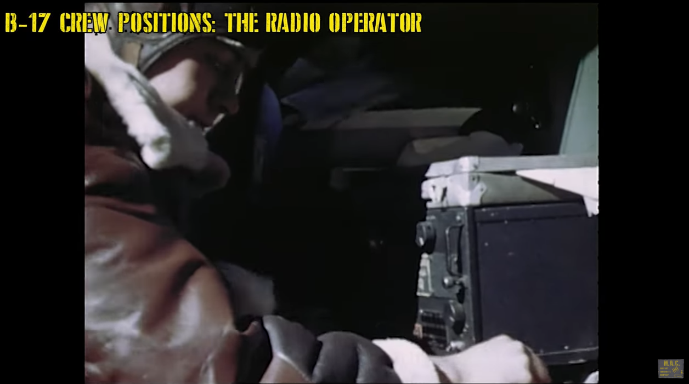
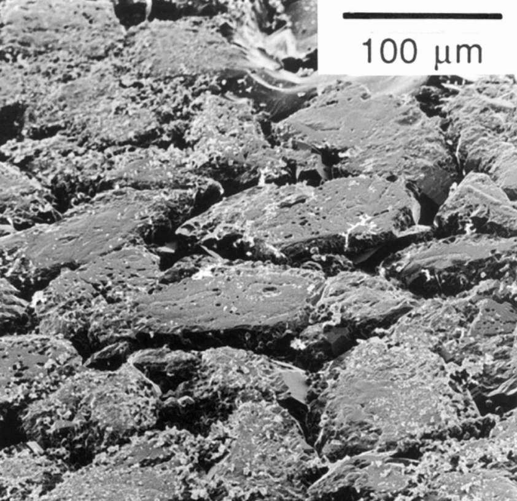
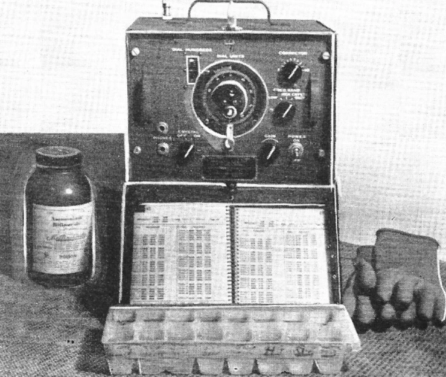
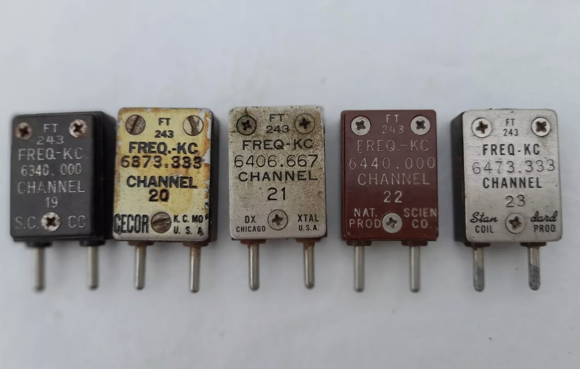

WW2의 수정 이야기 (8) - 안티 에이징 솔루션을 찾아서
게시: 2024-11-14T06:30:38+09:00
<결국 문제는 스크랫치> 많은 비용을 들여 제조해놓은 수정 박판들이 crystal aging이라는 노화 현상 때문에 결국 몇 주, 몇 달 후에는 모조리 불량품이 되어 버린다는 사실을 알게된 미군 통신사령부 산하 QCS는 공황 상태에 빠짐. 이미 수백만 개의 완성품이 쌓여 있는 것도 문제였지만, 지금 이 순간에도 한 달에 1백만 개씩 계속 양산이 되고 있다는 것은 더 큰 문제였음. 지금이라도 생산 중단을 명령해야 하나? 하지만 그럴 경우 대안은 있나? 당장 세계 곳곳의 전투 현장에서 많은 미군들이 목숨을 잃어가며 싸우고 있는데, 그들을 위한 무전기는 어떻게 하지? 특히 이 crystal aging에 따른 무전기 고장의 피해는 영국에 주둔한 제8 공군에서 두드러지게 드러남. 태평양 전선처럼 덥고 습한 환경도 아닐 텐데 왜 그랬을까? 제8 공군은 더 높은 주파수를 사용했고 허용 오차범위가 더 적었기 때문.

(제8공군 소속 B-17의 무전통신수의 모습)
그런 고민을 하며 이리저리 문제의 원인과 대응책을 연구하는 사이 몇 개월이 눈 깜짝할 사이에 흘러감. 이대로 있을 수는 없으므로 뭐라도 해보자는 생각으로 내려온 명령은 칫솔과 비누를 준비하라는 것. 이게 무슨 뜬금없는 짓인지 황당하겠지만, 결국 crystal aging 문제의 핵심은 수정 박판의 표면을 통해 침투하는 외부 물질 또는 반대로 상실되는 수정 부스러기였으므로, 표면을 반질반질하게 닦으면 크리스털 에이징을 늦추는 효과가 날 것이라는 아이디어 때문. 제조 마무리 단계에서 모든 수정 박판의 표면을 비눗물 묻힌 칫솔로 열심히 박박 닦으라는 지시는 미국내 칫솔업계에 생각하지 않은 호황을 안겨주었지만, 결국 실제 문제 해결에는 도움이 되지 않는다는 것이 곧 드러남. 그런데 결국 이 실패한 접근 방식도 전혀 쓸모 없는 시간낭비는 아니었음. 1943년 말이 되자, 비슷한 접근 방식에서 문제의 해결책이 드러나게 됨. 전에 언급했지만, 수정 박판을 제조하는 방법은 (1) 먼저 압전효과가 잘 나타나는 결정면을 찾아낸 뒤 (2) 얇게 기계톱으로 수정을 박판으로 썰어내고 (3) 그렇게 얻은 박판을 원하는 주파수가 나올 때까지 손으로 잘 연마하는 것. 문제는 이렇게 숫돌 또는 금속제의 공구로 수정 표면을 연마할 때 눈에 보이지 않는 많은 스크랫치가 발생한다는 것. 그런 미세한 스크랫치를 통해서 수정 부스러기가 부서져 나오기도 하고 반대로 외부 오염물질이 침투하기도 하는 것. 그런 스크랫치는 비눗물 묻힌 칫솔로 닦는다고 제거할 수는 없었다는 것이 문제.

(전자현미경으로 촬영한 수정의 연마된 표면)
그런데, 수정 박판을 제조하는 과정에서, 기계적 연마를 하지 않고 화학 물질을 써서 수정 박판을 부식시키는 etching 방법도 있었고, 일부 공장에서는 그런 엣칭 방법을 사용하고 있었음. 화학적 부식을 사용하면 기계적인 연마를 하는 것보다 눈에 보이지 않는 스크랫치가 훨씬 적지 않을까? 조사를 해보니 실제로 엣칭 방식으로 제조된 수정 박판에서는 크리스털 에이징 문제가 훨씬 더 적었음. 심지어 열대우림 지역에서 사용하는 무전기에서도 크리스털 에이징에 의한 고장은 거의 발생하지 않았음. 결국 매끈한 표면 처리가 문제이긴 했던 것.
<문과생들이 공돌이들의 발목을 잡게 할 수는 없다> 그러니까 기계적 연마 대신 화학 약품을 사용한 엣칭 방식으로 제조 공법을 바꾸면 크리스털 에이징 문제 해결이 가능. 그러나 이 사실이 알려진 것이 1943년 말 경이었음에도 이후로도 몇 개월이나 여전히 기계적 연마 공법으로 수정 박판이 계속 양산되었음. 이유는 어이없게도 계약 관계 서류 작업 때문.

(수정을 엣칭하기 위해 필요한 장비들. 불화암모늄, 플라스틱제 얼음 틀, 고무 장갑, 주파수 측정기.)
애초에 QCS가 여러 업체들을 불러모아 수정 박판 제조를 협의할 때 만들어진 계약서에 따르면, 어떤 공법으로 수정 박판을 제조하라는 조항은 없었고, 대신 최종 검수 과정에서 어떠어떠한 테스트에 합격해야 한다는 조건만 있었음. 계약서를 만들 때는 그것이 결과를 중시하는 자본주의적으로 똑똑한 방식이었음. 그러나 자본주의가 미처 예상하지 못했던 것이 바로 크리스털 에이징 문제. 제조 이후 테스트 할 때는 문제가 없으나 실제 작전에 투입된 이후 몇 주 후에는 문제가 발생한다는 것을 어떻게 예측했겠나? 이미 많은 공장들이 연마 방식으로 수정 박판을 제조 중이었는데, 이제 와서 복잡한 계약서를 새로 쓰고 제조 공법을 완전히 새로 바꾸어야 한다는 것은 어느 누구도 좋아하지 않았음. 특히나 기계적 연마 공법보다는 화학 약품에 의한 엣칭 공법이 제조 비용이 더 많이 들었음. 하지만 눈에 뻔히 보이는 문제를 서류 작업 때문에 차일피일 미루고만 있을 수는 없는 일. 마침내 1944년 7월, 시카고에 전미 수정 제조업체 회의가 소집됨. 여기서 문제의 본질과 해결책이 상세히 논의되었고, QCS는 복잡한 계약서를 다시 쓰고 재협상을 거칠 시간이 없으니, 일단 그냥 묻지도 따지지도 말고 연마 공법을 엣칭 공법으로 바꿔달라고 호소. 여기서 다시 미국 공업계의 창의성과 융통성이 발휘됨. 이들은 그 호소에 따라 당장 엣칭 공법으로 제조 라인을 바꾸었을 뿐만 아니라, 업체마다 조금씩 엣칭 공법을 개선하여 원가 절감까지 이루어냄. 특히 원래 구리 코일 제조를 하다가 수정 박판 제조에 뛰어들었던 시카고의 Ken Ross라는 제조업자는 기존에 20명의 노동자가 연마 공법으로 만들던 생산량을 4명의 노동자가 엣칭 공법으로 만들 수 있도록 연속 엣칭 시스템을 설계하고 구현. 이 공정은 Ross system이라는 이름으로 곧 전국의 수정 박판 제조업체들이 복제하여 사용. <기존 재고품은 어쩌지?> 이렇게 새로 만드는 수정 박판은 엣칭 공법을 통해 에이징 문제를 해결한다고 치고, 이미 제조를 마친 뒤 세계 곳곳의 집적소에 쌓아둔 재고품들은 어쩌지? 일단 3인 1조의 팀 12개를 급히 3개월간 훈련시켜 세계 곳곳의 전선 인근 물자 집적소로 파견. 여기서 이 팀들은 가지고 온 장비와 물자를 이용해 현지 창고에 보관된 수천 개의 수정 공진기를 점검. 당연히 이미 상당수의 수정 공진기가 제대로 작동하지 않는다는 것을 확인한 뒤, 그걸 개봉하고 엣칭 공법으로 새로 닦아서 새로운 주파수로 재조정. 그러나 많은 것들은 전에 이야기한 페놀 합성수지로 만들어진 지지대를 쓰거나 황동제 커넥터를 사용한 것이었으므로 그 속에 든 수정 박판만 뽑아내고 그냥 폐기. 미국내에서는 좀더 대량으로 이런 활동이 이루어짐.

(WW2 당시 제조된 수정 공진기인 FT-243들. 요즘 eBay에서 개당 약 2만원에 판매 중.)
그러나 얼마 지나지 않아 이런 식으로 기존에 완성된 재고품을 다시 손보는 것은 경제적이지 않다는 것이 분명해짐. 결과적으로 연마 공법으로 제조된 수백만 개의 수정 공진기는 완전히 폐기처분됨. 경제적 손실액으로나 전쟁을 위한 병참 측면에서나 보통 문제가 아니었을 텐데, 미국은 그걸 극복하고 결국 전쟁에서 승리. 하긴 전함 한 척이 잠수함에 당해 격침되면 발생하는 경제적 손실액이나 병참 문제가 훨씬 더 심각했을 듯. 당시 수정 공진기 한 개 가격이 5달러를 넘지는 않았으니, 3백만개를 날려먹어도 한 척의 건조 비용이 당시 가격으로 1억불 정도였던 Iowa급 전함 1척에 비하면 푼돈이었던 셈.

(이 사진 속 전함은 Iowa가 아니라 더 먼저 진수되고 더 작은 USS South Dakota (BB-57, 4만4천톤, 27.5노트). 이 전함의 건조 비용은 약 5천8백만 달러였다고.)